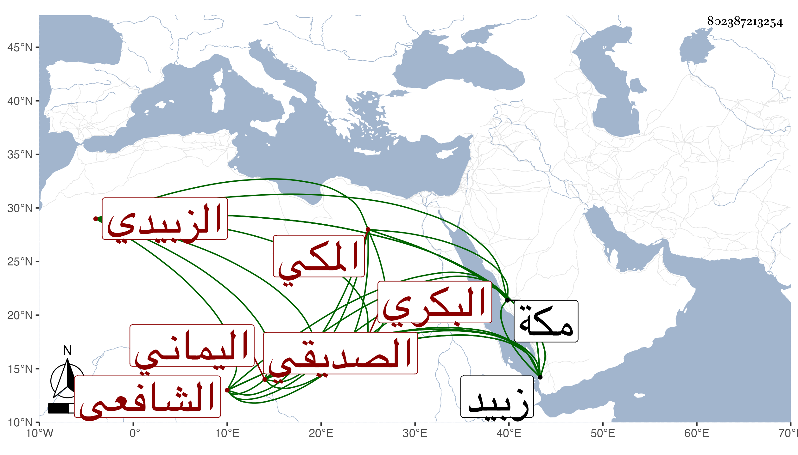

0902Sakhawi.DawLamic.ITO20230111-ara1.EIS1600.802387213254
Biography ID: 802387213254
799
موسى بن محمد بن موسى بن أحمد بن أبي بكر بن محمد الكمال بن زين العابدين الصديقي البكري المكي الأصل اليماني الزبيدي الشافعي الشهير جده بابن الرداد المشهور ويعرف هو بابن زين العابدين لقب أبيه . ممن أخذ الفقه عن عمر الفتي والنور بن عطيف نزيل مكة والقاضي الجمال محمد الطيب الناشري والشمس علي بن محمد الشرعبي ويوسف بن يونس الجبائي المقرئ المشار إليه الآن وشرف بن عبد الله بن محمود الشيفكي الشيرازي حين قدم عليهم زبيد في الفقه وأصله وتميز بحيث هو الآن فقيه زبيد واستقر في مدرسة المنصور عبد الوهاب الطاهري بعد شيخه الفتى وانتفع به الفضلاء في الفقه وكتب على الإرشاد شرحا لم يبرزه إلى الآن وهو خال عن اعتقاد جده ولم يكمل إلى الآن الخمسين .
